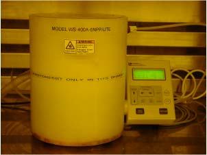

Week 2: Intro to the Cleanroom and Metal Deposition
Particle Counts
In this introductory lab we learned about the methods employed to lower the amount of particles in the cleanroom through various exhaust and ventilation systems. We learned that the classification inside our cleanroom is a Class 10. A Class 10 cleanroom has a dust count of 10 particles per cubic foot with a diameter of 0.5 um and larger.
As a demonstration of how controlled a Class 10 cleanroom is, Jim Fraser used the particle counter to count particles in our cleanroom compared to particles in our school hallway. In our cleanroom we measure 5 particles per cubic foot and in the hallway we measured 52000 particles per cubic foot. A remarkable 10^4 times more particles were in the hallway compared to our cleanroom. We were all surprised at how well regulated the particle count in the cleanroom was after this exercise.
Nickel Evaporation Using E-beam Evaporator
During this portion of the lab we were introduced to HF dipping for the first time. In accordance with safety regulations we put on the acid protection gloves, face mask and gown. The purpose of HF dipping in this portion of the lab was to clean the wafer of SiO2 before we loaded them into the E-beam Evaporator.
After the wafers were cleaned in the HF dip we loaded them into the planetarium within the E-beam Evaporator. The planetarium rotates the wafers to ensure equal distribution of evaporated Nickel onto the 4 inch silicon wafers.
The pressure in the E-beam Evaporator is lowered to the range of approximately 10^-5 torr. Upon achieving high vacuum pressure an electron beam is focused on the crucible which contains our 100nm of Nickel material until the material begins to evaporate. The evaporated nickel then coats the inside of the chamber.
Aluminum Evaporation Using Thermal Evaporator
In this section of the lab we repeated the process of dipping our wafers into Hydrofluoric Acid to clean them of SiO2.
We then loaded the wafers into the planetarium system of the Thermal Evaporator. The Thermal Evaporator uses resistive energy to evaporate thin films onto the wafer substrate. We evaporated 100nm of Aluminum onto our 4 inch silicon wafer.
Resistivity
We used a four point probe to measure the resistivity of the silicon wafer with and without the metal coating on the surface.
|
Wafer |
Resistivity |
|
Silicon |
.041 Ω |
|
Aluminum coated (Si wafer) |
.052 Ω |
|
Nickel coated (Si wafer) |
.058 Ω |
Surface Features
Next we examined the features of metal evaporated on the surface of our 4 inch silicon wafer under a high powered microscope (see image below).
Features of
metal
evaporated on silicon wafer
4
inch silicon wafers
Week 3: Lithography
In this lab we learned the basic steps of lithography and how to come up with an optimal recipe for the lithography process. Our experiments included varying the dose amount of photoresist required to coat the wafer, developing time and exposure time.
Exposure Dose
During this portion of the lab we determined which exposure dose produces the best dense lines. We were provided with the image and values below to aid in our calculations. We determined that we would have best results using 170 mJ/cm^2 for our exposure latitude.
We then measure the power of the light from the Karl Suss Aligner system which came out to be 25.5 mW/sec.
Calculations: [170 mJ/cm^2] / [25.5 mW/sec] = 6.67 seconds which is approximately 7 seconds.
We determined that 7 seconds was the best exposure time.
Karl
Suss
Aligner
Coating Wafers with Photoresist
During this step our goal was to find the optimal number of drops of photoresist.
Our first step was to ensure the wafer was free of water and then we placed the wafers in the dehydration bake at 120 degrees for 10 minutes.
We then placed the wafers on the spinner (shown below).

Laurell Spin Processor aka
“The Spinner”
Solitec
Spinner
We then coated the wafer with an adhesion promoter. The adhesion promoter we used was HMDS with 3 drops.
We spun the wafer at 5000 rpms for 60 seconds in order to drive off everything but the mono-layer of HMDS on the wafer.
Our next step was to apply AZ3330 photoresist. During this step we had to come up with an optimal amount of drops. We started out with 25 drops which we found out was too low. We increased our amount by 5 drops which gave a good coating. We tried a drop below and a drop above and arrived at the same result that 30 drops gave up the best coating with the least amount of drops.
We then spun 30 drops of AZ3330 at 5000 rpms for 60 seconds. After the wafers finished spinning we then placed them on the soft bake at 90 degrees for 60 seconds.
Cleaning Photoresist off of Wafer
When we were trying to find the optimal amount of drops for the photoresist we weren’t successful on the first try and therefore had to clean the wafer to try again. In order to clean the wafer we place it in the Solitec Spinner (see above picture). We squirt 4 drops of acetone on the wafer while it is spinning, giving time between each drop. We then squirted 4 drops of Isoproponal onto the wafer, giving time between each drop as well.
Exposure and Pattern Developing
In this step our goal was to find the optimal exposure time for transferring a pattern from the sample mask to our wafer.
We begun by loading the resist coated wafer onto the mask aligner of the Karl Suss Aligner. We then loaded the photomask onto the aligner.
Since we used the values from the exposure latitude diagram in conjunction with the power of the light from the Karl Suss Aligner, we were able to predetermine the exposure time which would provide us with the best pattern transfer. Our calculated exposure time was seven seconds. We programmed seven seconds into the Karl Suss Aligner and exposed the wafer.
After developing the wafer for 60
seconds in the chemical
development solution we examined the patter under a microscope. We were
satisfied to see that our calculations provided us with an excellent
pattern
transfer (sample shown below).
Pattern viewed under microscope
Week 4: Wet Etching / Annealing
Lab 4 demonstrated the importance using correct procedures in order to successfully perform wet etching and annealing on Transmission Line Model (TLM) pattern metalized wafer samples. Annealing is essential to cause the metal/semiconductor adhere together and cause their contact layer to intermix into a solution in order to decrease contact resistances.
Description and Summary
We found it very helpful to repeat the common procedures of Photolithography. Repetition caused us to more fully understand what process our wafer’s were going through. Starting with 2 Al and 2 Ni coated wafers from previous weeks we took them out of a Hydration bake, spun on HMDS then Photoresist, performed a soft bake, and then used the Karl Suss Aligner with our TLM mask. Developed and did our hard bake at 110 deg C for 1 minute. Before our hard bake we made sure to inspect each wafer under the microscope to see if the development appeared to come out correctly. Here we saw clear clean development with yellow photo resist still in place over the metal TLM square shaped contacts. The rest of the wafer had been exposed to the UV light through the mask, which caused the Photoresist to wash away in those areas after development, leaving bright white metal areas ready to be etched.
Our group has picked up on many practical lab work ethics while completing each task at hand. One would include that of being constantly aware of the vast resources available to find needed information, how to find and select what is needed, and then apply it. In Wet Etching we had to find the etch rates for Al and Ni through reading and talking to people such as Jim Frasier, the Lab supervisor. Ni took about 7 minutes to etch wile Al only took around 10 seconds. We examined our etch results through a microscope to confirm completion and that they weren’t overetched. Then we washed our photo resist off leaving the bare wafer where the etch took off the metal, and the metal contacts that the resist at one time covered.
| Wet etch
versed Dry can be
seen, |
Jim Frasier is by far one of the most educating resources and contacts we have during our lab processes. From experience he has said that the scotch tape test usually always performs in favor with usually no metal chunks coming off before annealing and rarely any after annealing. We found this to be true and passed all of our scotch tape tests before and after. The only times the test shows poor results is if the metal was coated originally onto a contaminated dirty wafer.

One skill not all of us mastered during this lab was cleaving the wafer, where if we didn’t press with the right angle and pressure, the wafer wouldn’t cleave or separate along the line but just nick and chip. It is neat to see with the (100) orientation wafer, it will break in horizontal and vertical directions while we noted (111) wavers cleave in “V” shapes.
 Our last steps in
this
lab that we actually performed during week 5 included the annealing,
testing,
and taking data to find the best annealing conditions.
The data charts and graphs are included in
the week 5 section. Here
we learned
about the use and operation of the Tube Furnaces which seemed both
complicated
and old school, since the controls look like they’ve been
around longer than my
parents. We divided
our annealing
samples into the following 12 categories, and picked times and
temperatures
based on the below graph which indicates the best anneal time for Al on
Si
would be around 450 deg Celsius for 5 minutes.
This mean point for our tests proved good as seen in week
5.
Our last steps in
this
lab that we actually performed during week 5 included the annealing,
testing,
and taking data to find the best annealing conditions.
The data charts and graphs are included in
the week 5 section. Here
we learned
about the use and operation of the Tube Furnaces which seemed both
complicated
and old school, since the controls look like they’ve been
around longer than my
parents. We divided
our annealing
samples into the following 12 categories, and picked times and
temperatures
based on the below graph which indicates the best anneal time for Al on
Si
would be around 450 deg Celsius for 5 minutes.
This mean point for our tests proved good as seen in week
5.
In Conclusion week 5 brought us into a better understanding of the process for TLM pattern development on Si Wafers. We continue to be amazed by the amount of effort, time, steps, and processes that are involved in the development of one tiny electronic component. We walked away with a sound understanding of the steps of photolithography, wet etching, annealing, and the enjoyment of cleaving wafers. J
Week 5: Contact Resistance
Within lab 5 we developed data and understanding for ideal annealing temperatures that caused the lowest contact resistance connections on the Si wafer. This lab also forced us to utilize our teamwork and efficiency skills, as I quickly noted we divided the processes into separate tasks, communicating effectively together, and compiling all of our results. Overlapping with the 3pm group we were able to divide who operated the tube furnace, times, temperatures, who was the excel expert to enter data that the probe analyst carefully aligned in the microscope and measured with the HP4145(shown right). We all traded positions to gain experience.
Calculation
This lab required us to know how to calculate the contact resistances and the pad resistances for the data given measuring examples such as the below-
Simply we just needed to take the HP4145 measurements and extend the line to find the Y-intercept which gives 2Rpad.
Y-intercept
= 2 Rpad = b given
y = mx+b we find
m=(y2-y1)/(x2-x1) then use a known
point to plug in y and x value, m, and solve for b
Rpad = b
= Y-intercept of Graph/2
Rcontact
= Rpad * A where A is the area of 1 contact and this will give ohms/cm^2
Data
Below is our data for the 12 Ni and Al annealed samples with calculated Rc per sample:
|
|
400 Deg |
ohms |
Rc (uΩ) |
450 Deg |
ohms |
Rc (uΩ) |
500 Deg |
ohms |
Rc (uΩ) |
|
|
Al (10) |
277 |
1 |
Al (10) |
250 |
1 |
Al (10) |
247 |
1 |
|
|
Ni (10) |
51 |
0.2516 |
Ni (10) |
33 |
0.125 |
Ni (10) |
102 |
0.5 |
|
5 min |
Al (40) |
277 |
|
Al (40) |
262 |
|
Al (40) |
254 |
|
|
|
Ni (40) |
70 |
|
Ni (40) |
58 |
|
Ni (40) |
112 |
|
|
|
Al (70) |
333 |
|
Al (70) |
283 |
|
Al (70) |
255 |
|
|
|
Ni (70) |
72 |
|
Ni (70) |
83 |
|
Ni (70) |
116 |
|
|
|
Al (10) |
250 |
1 |
Al (10) |
247 |
1 |
Al (10) |
242 |
1 |
|
|
Ni (10) |
26 |
0.108 |
Ni (10) |
61 |
0.2817 |
Ni (10) |
400 |
2 |
|
10 min |
Al (40) |
278 |
|
Al (40) |
258 |
|
Al (40) |
250 |
|
|
|
Ni (40) |
73 |
|
Ni (40) |
71 |
|
Ni (40) |
417 |
|
|
|
Al (70) |
278 |
|
Al (70) |
259 |
|
Al (70) |
251 |
|
|
|
Ni (70) |
86 |
|
Ni (70) |
85 |
|
Ni (70) |
298 |
|
Week 6: Oxide Growth
Lab 6 focused on using both wet and dry oxidation techniques to grow an oxide. Oxide layers are critical to MOSFET development and can also be used to create an image, as will be shown in lab 7.
Procedure Part 1
Dry oxidation is preferred when the growth needs to be more accurately controlled. A dry oxide layer is also more uniform than a wet oxide layer. Wet oxide growth, on the other hand, is much faster because of increased oxygen from the water, but the growth is not as consistent.
Our estimated growth time for 1000 Angstroms using wet oxidation: 3 minutes, 10 seconds
Our estimated growth time for 1000 Angstroms using dry oxidation: 1 hour, 0 minutes, and 26 seconds
We aimed for a growth of 1000 Angstroms on a practice wafer. We did not strip the native oxide, but instead integrated the natural oxide growth into our calculations. After growing the oxide, we used the color chart to give us an approximate thickness. Using the color chart, we approximated a thickness of 700 Angstroms. Since the nanospec was not available, we used the Filmetrics machine to give us a more accurate thickness. We set the thickness approximation to 710 and Filmetrics gave us an exact reading of 779 Angstroms.
Based on the exact thickness, we did not grow the oxide long enough to achieve the targeted 1000 Angstrom Oxide Growth.
Conclusion
We found through the data the best annealing conditions for Ni are 400
deg C for 10 minutes. Al has very little difference and
change
with temp and time, although hotter and longer seems better, so 500 deg
C for 10 minutes will be a tiny bit better, but probably not worth the
extra time.
Procedure Part 2
The second part of the lab was growing a 5200 Angstrom oxide. We calculated that a 5200 Angstrom oxidation could be grown over 40 minutes and 59 seconds, assuming a natural oxide of 238 Angstroms.
After the oxide was grown, we attempted to use the ellipsometer to measure the thickness of the oxide. The ellipsometer was not very good for measuring oxides in the 3000-7000 Angstrom range. We used the Filmetrics machine to get more accurate readings.
For the <100> wafers, we achieved an oxide growth of 5120 Angstoms. Fortunately we did not have to re-grow the oxide. We were able to achieve a green color and did not have to over etch.
Observations
Overall, the Filmetrics tool proved to be the most accurate tool. We also learned through the process that calculations are not always accurate. We were fortunate in our case to be sufficiently close to the approximated values, but otherwise we may have had to over etch. Through the lab process, we learned that it is better to have excess oxide growth than to under grow the oxide, at least in terms of time spent on the lab. From Jim, we learned to shoot for slightly higher growth than calculated, and this method worked well for our group.
Charts
Below is the overall process used for growing oxides on the wafer.
Week 7: Learning Photolithography Using Full Color Dielectric Pictures
Lab 7, or the Nemo lab, was a culmination of many principles learned in previous labs. The purpose of the lab was to teach us how to use accurate alignment. In the previous labs, only a single lithography mask was used. This lab taught us how to use a series of lithography masks to create different oxide depths. These oxide depths, in turn, display as different colors. We completed the wafers and were able to see the distinct colors fairly clearly. This lab also taught the use of a negative photoresist.
Flowchart
of the process used to create
different oxide depths, as well as a negative photoresist layer.
Per
Jim’s suggestion we
tilted the original lithography layer slightly to compensate for the
misalignment of the mask pattern. After the first lithography process
(or the
“green mask”), we needed to ensure that subsequent
etches took into
consideration the etching that had already been done. For example, to
etch down
to blue, we needed to remove 2200 Angstroms from the green oxide growth
to get
down to 3100 Angstroms. According to our calculations, this required
120
seconds of etch time. Additionally, for red, the target was 2700
Angstoms. This
required 22 seconds
of etching.
Unfortunately,
the first dip
was not sufficient. The BHF did not quite etch at 1000 Angstoms per
second as
anticipated. We dipped for another couple of seconds to get around 2730
Angstroms.
We did
not have sufficient
time to apply the negative photoresist during the lab, but we were able
to
complete this portion later. It would be helpful to take off this
portion of
the lab as a lot of the groups struggled to complete the negative
photoresist.
This lab
was extremely
helpful in teaching us about alignment of multiple lithography stages.
We were
able to find the alignment of the MOSFET lithography process much more
easily
after going through this lab.
Conclusion
Labs 2-7
were instrumental in
cleanroom orientation and helped us develop a clear understanding of
lithography, oxide growth, clearnroom practices, and wafer coating. The
labs
proved to be a solid foundation for the alignment and oxide growth
necessary in
the later MOSFET labs. This was clearly a good set of introductory labs
that
will help us on the rest of the labs.
If you want the entire .zip file for this project contact me.
top of page